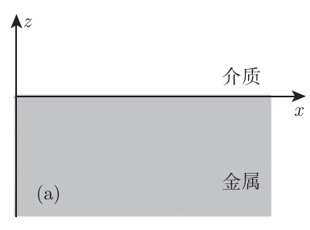

依赖于共振结构中光与物质相互作用所产生的表面电磁模式，可以将电磁场局域在亚波长尺度内，因此在信息传输、光学传感、光电探测、显示等领域有着广泛应用.
等离激元光学提供了一种将电磁场限制在亚波长尺度的方法，并由于金属界面或金属纳米结构中电磁辐射与传导电子间的相互作用产生增强的光学近场.
| 等离激元光学 | 表面等离极化激元 （surface plasmon polariton） |
| 局域表面等离激元 （localized surface plasmon） |
考虑导体与介质间的平坦界面，当外部电荷、电流密度与介电常数在波长量级上随距离的变化均可忽略时，由Maxwell方程组可以推导出亥姆霍兹方程：
Maxwell方程组：
$$\begin{cases} \nabla\cdot\boldsymbol{D} = \rho\\ \nabla\cdot\boldsymbol{B} = 0\\ \nabla\times\boldsymbol{E} = -\frac{\partial\boldsymbol{B}}{\partial t}\\ \nabla\times\boldsymbol{H} = \frac{\partial\boldsymbol{E}}{\partial t} + \boldsymbol{j} \end{cases}$$物质方程：
$$\begin{cases} \boldsymbol{j} = \sigma\boldsymbol{E}\\ \boldsymbol{D} = \epsilon\boldsymbol{E}\\ \boldsymbol{B} = \mu\boldsymbol{H} \end{cases}$$对\(\boldsymbol{E}\)的旋度再取旋度，有：
$$\nabla\times(\nabla\times\boldsymbol{E}) = \nabla\times(-\frac{\partial\boldsymbol{B}}{\partial t})$$推导：Maxwell->亥姆霍兹
1、旋度与偏微分的先后
2、偏微分的替换
亥姆霍兹方程的推导可以单列
对于最简单的一维情况：
[设]光场沿笛卡尔坐标系的x方向传播，且在与传播方向垂直的y方向无空间变化.
则：
$$\epsilon = \epsilon(z)$$x-y平面就是分界面，z轴垂直于分界面，因此介电常数会随z变化，因为其穿过了不同的介质.
此时界面\(z=0\)处的传播场可写为：
$$\boldsymbol{E}(x,y,z) = \boldsymbol{E}(z)e^{i\zeta x}$$“在与传播方向垂直的y方向无空间变化”\(\Rightarrow k_y = 0\)
只有在介质完全均匀时，中括号内才能取上述表达式，然而现在介质在z轴方向分层，光波会发生复杂的指数衰减，因此直接将中括号中的内容用\(\boldsymbol{E}(z)\)取代.
E(z)是一个在x-z平面上的矢量，但它是一个z的一元函数，即：
$$\boldsymbol{E}(z) = a(z)\hat{\boldsymbol{x}} + b(z)\hat{\boldsymbol{z}}$$波矢常用于自由空间，传播常数常用于受限空间.
代入亥姆霍兹方程，得波动方程：
由于磁场\(\boldsymbol{H}\)也存在类似方程，利用谐波的时间依赖性，可得耦合方程：
$$\begin{cases} \frac{\partial E_z}{\partial y} - \frac{\partial E_y}{\partial z} = i\omega\mu_0H_x\\ \frac{\partial E_x}{\partial z} - \frac{\partial E_z}{\partial x} = i\omega\mu_0H_y\\ \frac{\partial E_y}{\partial x} - \frac{\partial E_x}{\partial y} = i\omega\mu_0H_z\\ \frac{\partial H_z}{\partial y} - \frac{\partial H_y}{\partial z} = -i\omega\epsilon_0\epsilon E_x\\ \frac{\partial H_x}{\partial z} - \frac{\partial H_z}{\partial x} = -i\omega\epsilon_0\epsilon E_y\\ \frac{\partial H_y}{\partial x} - \frac{\partial H_x}{\partial y} = -i\omega\epsilon_0\epsilon E_z \end{cases}$$什么玩意儿一堆
对于沿x方向传播且在y方向保持同性的电磁波，上述方程可简化为：
$$\begin{cases} \frac{\partial E_y}{\partial z} = -i\omega\mu_0H_x\\ \frac{\partial E_x}{\partial z} - i\zeta E_z = i\omega\mu_0H_y\\ i\zeta E_y = i\omega\mu_0H_z\\ \frac{\partial H_y}{\partial z} = i\omega\epsilon_0\epsilon E_x\\ \frac{\partial H_x}{\partial z} - i\zeta H_z = -i\omega\epsilon_0\epsilon E_y\\ i\zeta H_y = -i\omega\epsilon_0\epsilon E_z \end{cases}$$这又什么玩意儿
由此可见，该物理体系中存在两个不同偏振态的传播场：
| 横磁模式 | 电场有x与z分量，磁场仅存在y分量 | $$\begin{align} &\frac{\partial E_x}{\partial z} - i\zeta E_z = i\omega\mu_0H_y\\ &\frac{\partial H_y}{\partial z} = i\omega\epsilon_0\epsilon E_x\\ &i\zeta H_y = -i\omega\epsilon_0\epsilon E_z \end{align}$$ |
| 横电模式 （transverse electric mode, TE mode） |
电场仅存在y分量，磁场有x与z分量 | $$\begin{align} &\frac{\partial E_y}{\partial z} = -i\omega\mu_0H_x\\ &i\zeta E_y = i\omega\mu_0H_z\\ &\frac{\partial H_x}{\partial z} - i\zeta H_z = -i\omega\epsilon_0\epsilon E_y \end{align}$$ |
两套体系互不影响，因此可以区分为两种模式.
\(E_y = 0\)就是横磁模式；\(H_y = 0\)就是横电模式
横磁模式下，有：
波动方程为：
$$\frac{\partial^2H_y}{\partial z^2} + (k_0^2\epsilon - \zeta^2)H_y = 0$$横电模式下，有：
$$H_x = i\frac{1}{\omega\mu_0}\frac{\partial E_y}{\partial z}$$ $$H_y = \frac{\zeta}{\omega\mu_0}E_y$$波动方程为：
$$\frac{\partial^2 E_y}{\partial z^2} + (k_0^2\epsilon - \zeta^2)E_y = 0$$图示为支持表面等离极化激元传播的最简单结构：

即非吸收型介质（介电常数\(\epsilon_2\)）半空间\(z\gt 0\)与相邻导体（介电常数\(\epsilon_1(\omega)\)）半空间\(z\lt 0\)间的平面界面.
横磁模式下，由\(E_x\)与\(E_z\)公式可以推出：
怎么推出的？
\(z\gt0\)半空间内的电场与磁场为：
$$\begin{cases} H_y(z) = A_2e^{i\zeta x}e^{-k_2z}\\ E_x(z) = -iA_2\frac{1}{\omega\epsilon_0\epsilon_2}k_2e^{i\zeta x}e^{-k_2z}\\ E_z(z) = -A_1\frac{\zeta}{\omega\epsilon_0\epsilon_2}e^{i\zeta x}e^{-k_2z} \end{cases}$$\(z\lt 0\)半空间内的电场与磁场为：
$$\begin{cases} H_y(z) = A_1e^{i\zeta x}e^{k_1z}\\ E_x(z) = -iA_1\frac{1}{\omega\epsilon_0\epsilon_1}e^{i\zeta x}e^{k_1 z}\\ E_z(z) = -A_1\frac{\zeta}{\omega\epsilon_0\epsilon_1}e^{i\zeta x}e^{k_1z} \end{cases}$$先解\(H_y\)，再解\(E_x\)和\(E_z\)
\(H_y\)是由波动方程解出来的
根据\(H_y\)与\(\epsilon_iE_z\)在界面处的连续性，可得：
$$A_1 = A_2$$ $$k_2/k_1 = -\epsilon_2/\epsilon_1$$为什么偏偏是这两个的连续性
根据\(z\gt0\)半空间内的电场与磁场表达式中，指数部分符号的使用惯例，对于\(\epsilon_2\gt 0\)的介质材料，模式的局域性则要求\(\Re[\epsilon_1]\lt0\)
传播界面上传播的表面等离极化激元的色散关系（dispersion relation）为：
$$\zeta = k_0\sqrt{\frac{\epsilon_1\epsilon_2}{\epsilon_1 + \epsilon_2}}$$局域表面等离激元是金属纳米结构中的传导电子耦合至电磁场的非传播激发，模式的本质是亚波长金属纳米颗粒在振荡电磁场中的散射.
传导电子：就是金属纳米结构中的自由电荷
耦合至电磁场：就是自由电子随着电场的方向来回振荡，光波中的电场方向是上下振荡的，
非传播激发：因为纳米结构具有边界，电子振荡
电荷做加速运动，就会向外辐射电磁波
由于颗粒的弯曲表面能够对被驱动的电子施加有效的回复力，所以会导致共振态的出现.